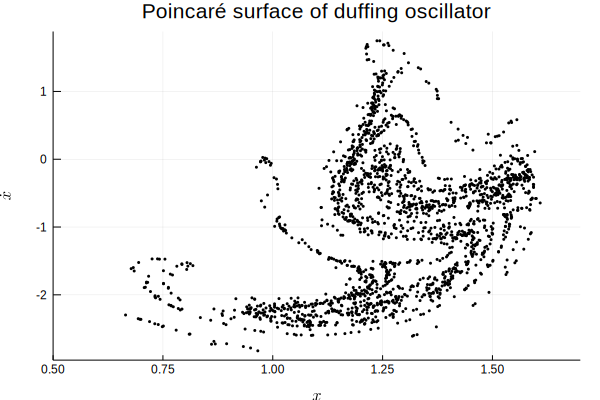
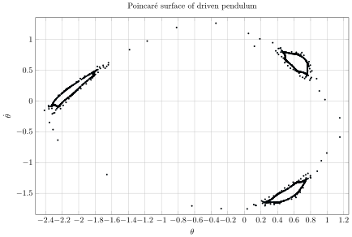

GSoC 2017: Native Julia second order ODE and BVP solvers
My original GSoC project was about implementing native Julia solvers for solving boundary value problems (BVPs) that were determined from second order ordinary differential equations (ODEs). I started down the BVP path, built a shooting method to solve BVPs from initial value problems (IVPs), and then built the beginning of the mono-implicit Runge-Kutta (MIRK) method. Those solvers are in the BoundaryValueDiffEq.jl repository. Instead of trying to jump directly to the end point, and talk about how to do every detail in MIRK, I went to explore how those details naturally arise in second order ODEs. I implemented many solvers for dynamical IVPs. Although I didn’t fully complete my original goal by the end of GSoC, I am almost there.
Symplecticity
First, there the idea of symplecticity, because the Labatto (Lobatto IIIA-IIIB) MIRK tableaux are actually symplectic. Basically, symplecticity is another way to say that first integrals (energy, angular momentum and etc.) are conserved, so symplectic integrators are specialized for solving second order ODEs that are raised from dynamic systems which require energy conservation. It is easier to see what symplecticity actually entails on dynamical IVPs. For instance, the Hamiltonian $\mathcal{H}$ and the angular momentum $L$ for the Kepler problem are
$$ \mathcal{H} = \frac{1}{2}(\dot{q}^2_1+\dot{q}^2_2)-\frac{1}{\sqrt{q^2_1+q^2_2}},\quad L = q_1\dot{q_2} - \dot{q_1}q_2. $$We can solve the Hamilton’s equations
$$ \dot{\boldsymbol{p}}=-\frac{\partial{\mathcal{H}}}{\partial{\boldsymbol{q}}}\quad ,\quad \dot{\boldsymbol{q}}=\frac{\partial{\mathcal{H}}}{\partial{\boldsymbol{p}}} $$to get the solution of the Kepler problem.
using OrdinaryDiffEq, ForwardDiff, LinearAlgebra
H(q,p) = norm(p)^2/2 - inv(norm(q))
L(q,p) = q[1]*p[2] - p[1]*q[2]
pdot(dp,p,q,params,t) = ForwardDiff.gradient!(dp, q->-H(q, p), q)
qdot(dq,p,q,params,t) = ForwardDiff.gradient!(dq, p-> H(q, p), p)Then, we solve this problem by Ruth3 symplectic integrator with appropriate initial conditions.
initial_position = [.4, 0]
initial_velocity = [0., 2.]
tspan = (0,20.)
prob = DynamicalODEProblem(pdot, qdot, initial_velocity, initial_position, tspan)
sol = solve(prob, Ruth3(), dt=1//50);Finally, we analyze the solution by computing the first integrals and plotting them.

Note that symplectic integrator doesn’t mean that it has exact conservation. The solutions of a symplectic integrator are on a symplectic manifold, but don’t necessarily conserve the Hamiltonian (energy). The energy can have fluctuations in a (quasi-)periodic manner, so that the first integrals have small variations. In the above case, the energy varies at most 6e-6, and it tends to come back. The variations also decrease as dt is smaller. The angular momentum is conserved perfectly. More details are in this notebook.
Adaptivity and Dense Output
Again, I explored adaptivity and dense output in the IVP world. I implemented several adaptive Runge-Kutta-Nyström (RKN) solvers. The MIRK adaptivity and RKN adaptivity share one common theme, which is error estimation, and MIRK does it by using dense output. Calculating Poincaré section is an example of a practical usage of the dense output. When plotting the Poincaré section, we usually need to use saveat or ContinuousCallback, and both of them need dense output in order to do well. Dense output is essentially a continuous solution of a ODE. saveat uses dense output to evaluate values at the specified time, so the ODE integration can still be adaptive (the integrator doesn’t need to hit the exact saveat point). ContinuousCallback performs root-finding on the dense output to find when does an event occur. Thus, high order dense output is important for calculating accurate saveat and ContinuousCallback. Here are two examples of plotting Poincaré section.
Duffing oscillator
Duffing oscillator is a forced oscillator that has nonlinear elasticity, which has the form
$$ \ddot{x} + \delta \dot{x} + \beta x + \alpha x^3 = \gamma \cos(\omega t). $$First, we need to write the ordinary differential equation with parameters.
using OrdinaryDiffEq, Plots; pgfplots()
function draw_duffing(Γ, α, β, δ, ω)
function driven_pendulum(dv,v,x,p,t)
Γ, α, β, δ, ω = p
dv[1] = Γ*cos(ω*t) - β*x[1]^3 - α*x[1] - δ*v[1]
end
prob = SecondOrderODEProblem(driven_pendulum, [1.5], [0.], (5000., 35000.), (Γ, α, β, δ, ω))
sol = solve(prob, DPRKN6(), saveat=2pi/prob.p[end])
y1, x1 = [map(x->x[i], sol.u[end-2000:end]) for i in 1:2]
scatter(x1, y1, markersize=0.8, leg=false, title="Poincaré surface of duffing oscillator", xlabel="\$x\$", ylabel="\$\\dot{x}\$", color=:black, xlims=(0.5,1.7))
end
draw_duffing(8, 1, 5, 0.02, 0.5)Then, we need to get the solution at $\omega t \mod 2\pi=0$ to plot the Poincaré section, and we can achieve this by using saveat.

Driven pendulum
Drive pendulum is a periodically forced pendulum, which has the form of
$$ \ddot{\theta} + \sin(\theta) = f_0 cos(\omega t) $$Again, we do the same thing as what we did above.
using OrdinaryDiffEq, Plots; pgfplots()
function draw_driven_pendulum(f₀,q,ω)
function driven_pendulum(dv,v,x,p,t)
f₀, q, ω, = p
dv[1] = -sin(x[1]) - q*v[1] + f₀*cos(ω*t)
end
prob = SecondOrderODEProblem(driven_pendulum, [0.], [2pi], (0.,50000.), (f₀,q,ω))
sol = solve(prob, DPRKN6(), saveat=2pi/prob.p[end])
y1, x1 = [map(x->x[i], sol.u[500:end]) for i in 1:2]
scatter(x1.%pi, y1, markersize=0.8, leg=false, title="Poincaré surface of driven pendulum", xlabel="\$\\theta\$", ylabel="\$\\dot{\\theta}\$", color=:black)
end
draw_driven_pendulum(1.12456789, 0.23456789, 0.7425755501794571)
Boundary Value Problem
The MIRK solver in BoundaryValueDiffEq doesn’t have adaptivity and dense output yet, but with all the things that I have learned from IVPs, most of the pieces have been implemented or understood and so we can expect this to be completed in the near future. Here is an example of using the BoundaryValueDiffEq package. In this example, we will solve the problem
using BoundaryValueDiffEq
const g = 9.81
L = 1.0
tspan = (0.0,pi/2)
function simplependulum(du,u,p,t)
θ = u[1]
dθ = u[2]
du[1] = dθ
du[2] = -(g/L)*sin(θ)
end
function bc1(residual, u, p, t)
residual[1] = u[end÷2][1] + pi/2 # the solution at the middle of the time span should be -pi/2
residual[2] = u[end][1] - pi/2 # the solution at the end of the time span should be pi/2
end
bvp1 = BVProblem(simplependulum, bc1, [pi/2,pi/2], tspan)
sol1 = solve(bvp1, GeneralMIRK4(), dt=0.05)
More details can be found in here.
Acknowledgements
I would like to thank all my mentors Chris Rackauckas, Jiahao Chen and Christoph Ortner for their responsiveness and kind guidance. Especially my mentor Rackauckas, he can answer my questions in five minutes after I asked on Slack. I would also like to thank Julia community for managing GSoC project and JuliaCon 2017.